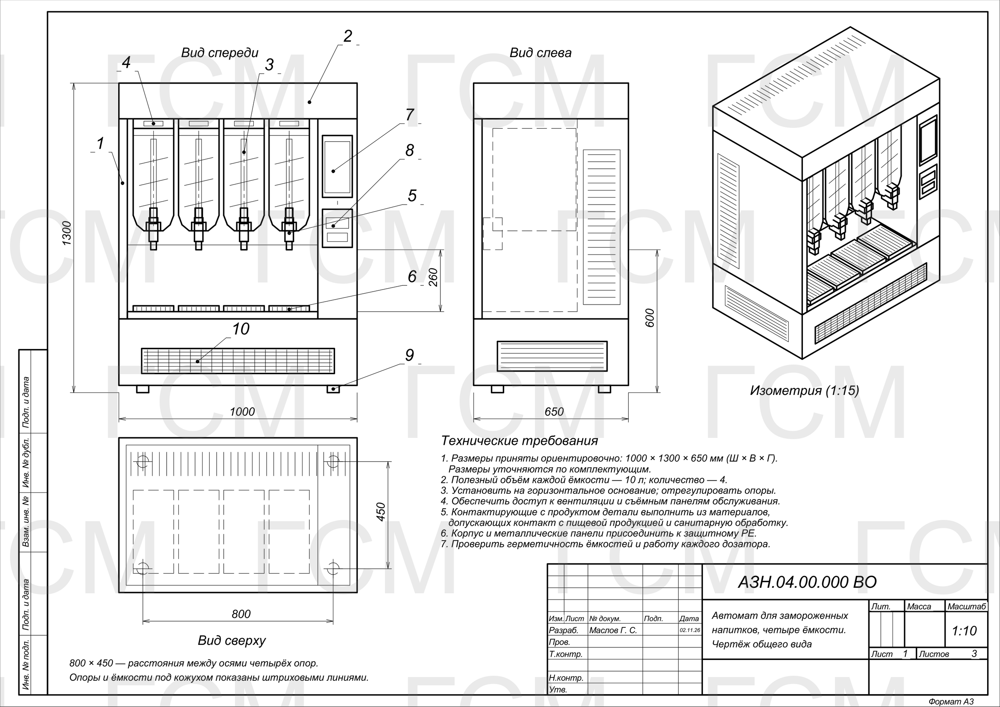
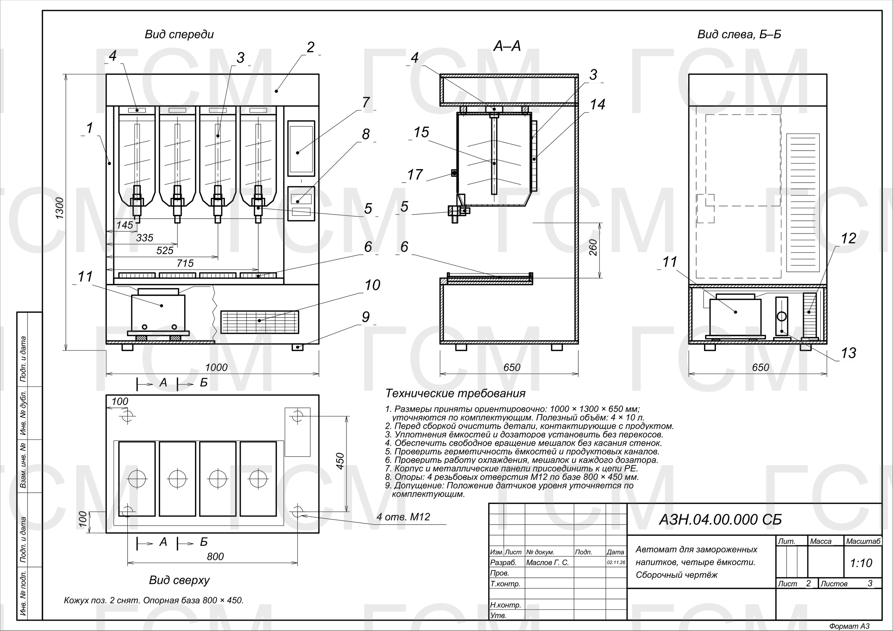
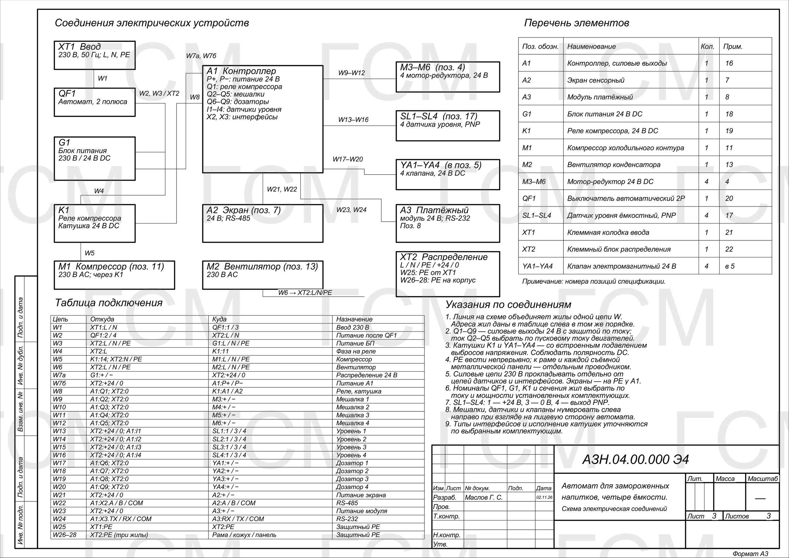
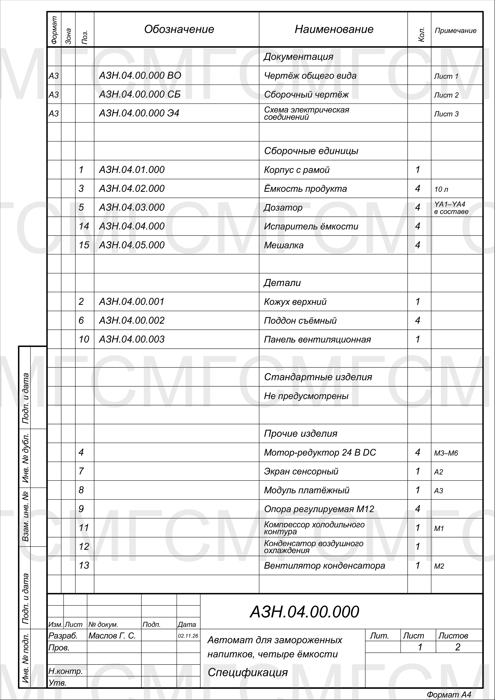
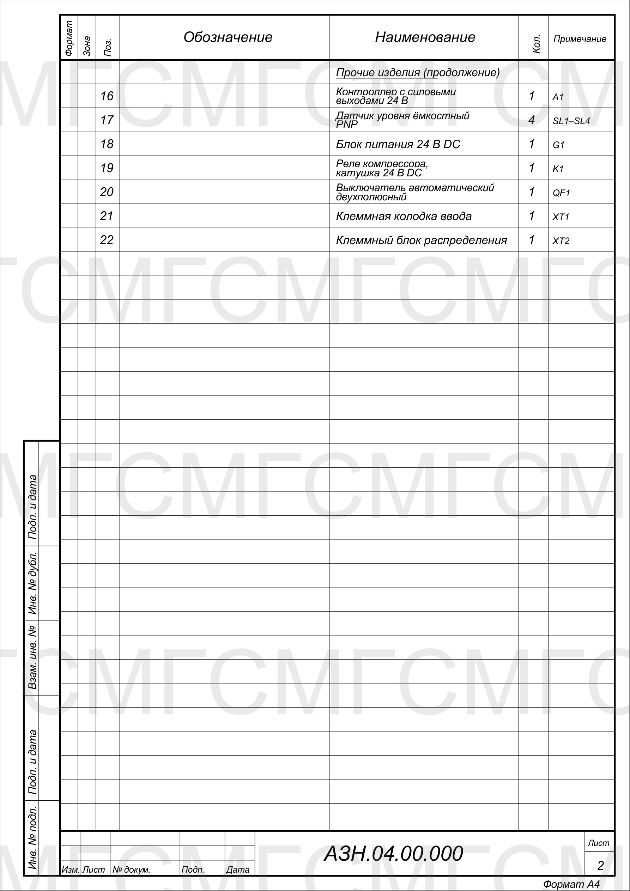

Автомат для замороженных напитков, четыре ёмкости
Комплект конструкторской документации в КОМПАС-3D по ЕСКД: общий вид, сборочный чертёж, схема электрическая соединений, спецификация. Показ в уменьшенном виде, исходные файлы не публикуются. Автор: Маслов Георгий Сергеевич.




